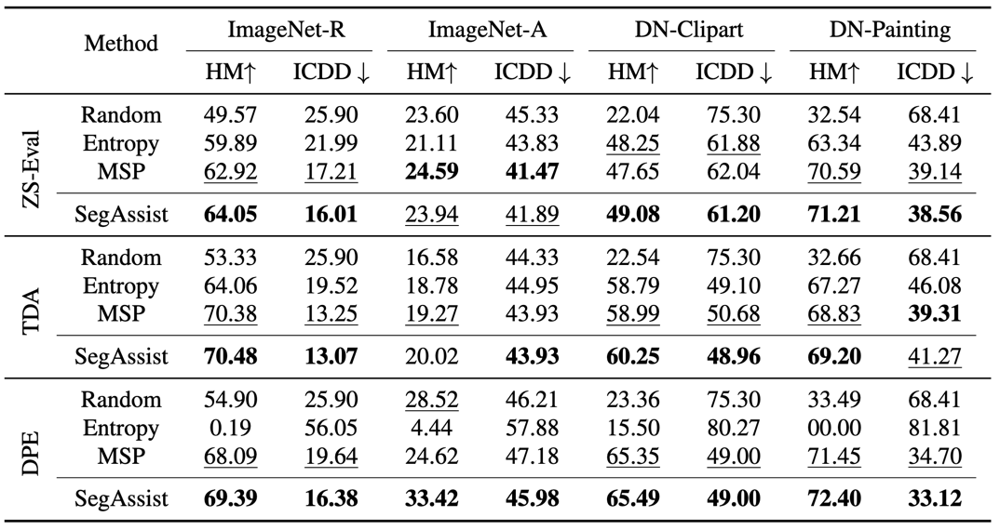

Abstract
In dynamic environments, unfamiliar objects and distribution shifts are often encountered which challenge the generalization abilities of the deployed trained models. This work addresses Incremental Test Time Adaptation (ITTA) of Vision-Language Models (VLMs), tackling scenarios where unseen classes and unseen domains continuously appear during testing. Unlike traditional Test Time Adaptation approaches where the test samples come only from a predefined set of classes, our framework allows models to adapt simultaneously to both covariate and label shifts, actively incorporating new classes as they emerge. Towards this goal, we establish a new benchmark for ITTA, integrating single-image TTA methods for VLMs with active labeling to query an oracle for samples potentially representing unseen classes during test time. We propose a segmentation assisted active labeling module, termed SegAssist, which is training-free and repurposes the VLM’s segmentation capabilities to refine active sample selection, prioritizing samples likely to belong to unseen classes. Extensive experiments on several benchmark datasets demonstrate the potential of SegAssist to enhance the performance of VLMs in real-world scenarios, where continuous adaptation to emerging data is essential.
Incremental Test Time Adaptation

SegAssist for Active Sample Selection

Incremental Class Detection Delay (ICDD) Metric

Experimental Results

BibTeX
@article{sreenivas2025segassist,
title={Segmentation Assisted Incremental Test Time Adaptation in an Open World},
author={Sreenivas, Manogna and Biswas, Soma},
journal={British Machine Vision Conference},
year={2025}
}